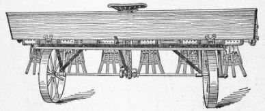

93. The Selection Of Crop
Description
This section is from the book "Vegetable Gardening", by Ralph L. Watts. Also available from Amazon: Vegetable Gardening.
93. The Selection Of Crop
In the selection of crops for manurial purposes the following factors should be considered: (1) Adaptation to climate; (2) adaptation to soil; (3) character of plant—whether a legume or a non-legume; (4) the amount of vegetable matter produced; (5) adaptation to system of cropping; (6) rapidity of growth; (7) character of root growth; (8) hardiness; (9) ease of incorporation with the soil.
94. Red Clover
In the North, red clover is excellent to sow after the removal of the July or the early August truck crops. The surface of the soil should be made very fine and a firm seed bed established, and not less than 12 pounds of seed should be sown to the acre. The crop may be plowed down late the following spring before planting late cabbage and many other vegetables for fall and winter markets; or it may be mowed once and the second crop plowed down late in the fall preparatory to starting crops early the next spring.
95. Mammoth Clover
Mammoth Clover is practically an annual, which makes a larger and more vigorous growth than red clover, and it is, therefore, more highly valued by some as a quick manurial crop. It should be sown at the same time as red clover.
96. Crimson Clover
As a cover crop crimson clover is used to a considerable extent in the middle Atlantic seaboard region. It is valued highly for its power to assimilate free nitrogen. A crop cut May 22 at the Delaware station (Delaware Station Bul. 60, p. 10) contained 180 pounds of nitrogen to the acre. The plant thrives best in sandy soils and where the winters are not too severe. It is unquestionably the most valuable manurial crop in the trucking sections of New Jersey.
The seed should be sown not later than August. July is not too early for the cooler sections. A common practice is to sow before the last cultivation of tomatoes, sweet corn and other late truck. Crops are sometimes harvested and the ground thoroughly harrowed before sowing crimson clover, while plowing before harrowing and sowing is often desirable. The seed soon loses its vitality and, therefore, only fresh seed should be sown. Not less than 15 pounds an acre should be used. The Virginia Truck Experiment Station claims that not less than 20 pounds an acre should be used at Norfolk.
97. Rye
Rye, while a nonlegume, is exceedingly valuable under certain conditions. It grows fairly well in any soil. This cannot be said of most cover crops. Because of this fact it is often possible to start with rye on very poor soils and then use more desirable crops after some humus has been added to the soil. Rye may be sown later in the fall than any other crop, and for this reason it is a valuable crop to start after the removal of late vegetables, when it would be useless to sow any of the legumes. It thrives throughout the North and is widely regarded as the best general purpose cover crop for cold sections. To secure a good stand not less than three bushels of seed should be used to the acre.
98. Hairy Vetch
Hairy Vetch, a legume, is valuable as a cover crop on the sandy soils of the North. To secure a maximum growth it should be sown in July. It is sometimes sown with rye.
99. Oats And Canada Field Peas
Oats And Canada Field Peas when grown together make a large amount of vegetable matter. It is customary to sow about one bushel of peas with two or three bushels of oats. Both crops require cool climatic conditions. If they are allowed to attain considerable size, a rope or a chain must be adjusted to the plow to turn under the dense vegetation, which will undergo a rapid decomposition if plowed under when about 2 feet high. These crops should be started as early in the spring as possible. Oats may be used alone as an early spring crop or as a late fall crop.
100. Cowpea
This is a valuable soil-improvement crop in all sections of the South. It requires a large amount of heat and no attempt should be made to grow it in the coolest parts of the North. Under favorable conditions the plants produce a large amount of highly nitrogenous vegetable matter in a remarkably short time. The seed should never be sown in the spring until the ground is thoroughly warm. Cowpeas, also, work in to good advantage between spring and fall crops; that is, in many sections spring vegetables may be sold, and cowpeas grown and plowed under before the time for starting fall crops, such as kale, spinach and early cabbage planted in the fall. The Virginia Truck Experiment Station states that a crop of cowpeas plowed under green in the fall gave as large a yield of cabbage to the acre as 20 tons of stable manure. This station urges the use of lime in conjunction with green crops.
The most valuable varieties for manurial purposes are Whippoorwill, New Era, Iron and Unknown or Wonderful. It is necessary to chop up the vines with a disk harrow before they can be plowed under with any degree of satisfaction. The customary sowing is about two bushels of seed to the acre covering with a harrow.
101. Soy Bean
Soy Bean, also a legume, succeeds better on heavy soils and in cool climates than the cowpea and is, therefore, valued by some northern growers as well as southern truckers for manurial purposes. The seed may be sown broadcast or in drills. Cultivation is a great benefit to the crop.
102. Fertilizing Green Manurial Crops
When crops for manurial purposes are grown on impoverished soils, commercial fertilizers should be used liberally enough to encourage a good growth. It may pay to use 500 pounds to the acre of a high-grade fertilizer. Nitrogen is especially important for the nonlegumes.
103. When To Plow Under Green Crops
No very definite advice can be given upon this question, because many factors must be taken into account, such as kind and age of crop, vegetables to follow, needs of the soil and seasonal conditions. The older the crop the more time will be required for its decomposition and the less benefit it will be to the next cash crop. Soil moisture problems are especially important in connection with green manures. When plowing is delayed too long, the ground may become too dry for successful sowing or transplanting. To prevent serious interference with the capillary movement of the soil moisture, the furrow slice should be stood on edge as much as possible rather than turned flat. Rolling or dragging immediately after plowing is regarded as valuable in preventing the development of soil acidity.
Fig. 11. Single-Row Fertilizer Distributor.
Fig. 12. Wheelbarrow Fertilizer Distributor.
Fig. 13. M'whorton Fertilizer Distributor.
Continue to:
Tags
plants, crops, gardening, cultivated, harvesting, food ,greenhouses, fertiliser, vegitables